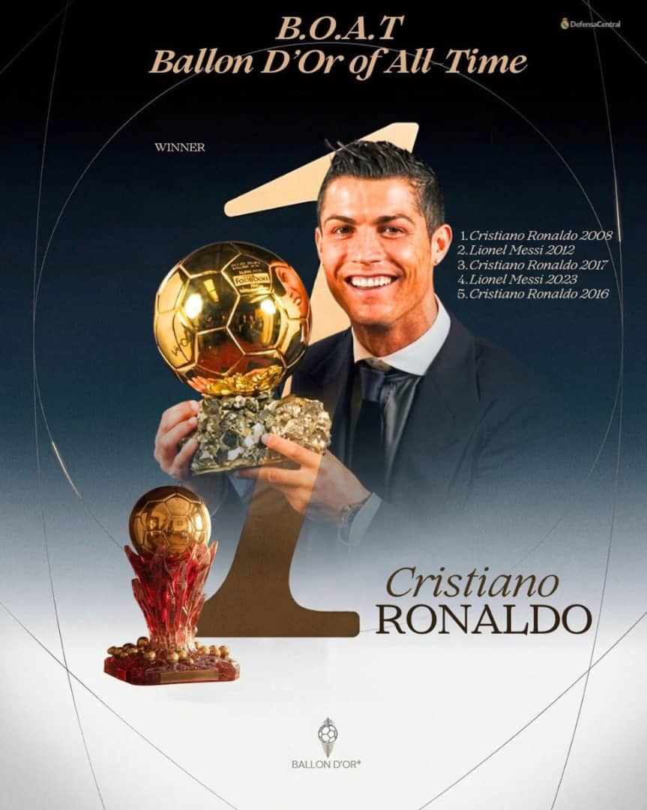

About Cristiano Ronaldo

Cristiano Ronaldo is a Portuguese professional footballer born on 5 February 1985 in Funchal, Madeira, Portugal. He is well known for his goal-scoring ability, speed, discipline and dedication to football.
He is one of my favourite football players because of his determination and the effort he puts into improving his game. His success has made him one of the most recognised footballers in the world.
His Football Journey
Ronaldo started playing football at a young age. His journey to becoming a professional footballer was not easy, but he remained focused on his dreams.
Some important stages of his career include:
- Started his professional career at Sporting CP.
- Joined Manchester United in 2003.
- Moved to Real Madrid in 2009.
- Joined Juventus in 2018.
- Returned to Manchester United in 2021.
- Joined Al-Nassr in 2023.
His Major Achievements
Throughout his career, Ronaldo has achieved a lot, including the following:
- Five Ballon d'Or awards.
- Five UEFA Champions League titles.
- Winner of Euro 2016 with Portugal.
- Winner of the 2019 UEFA Nations League.
- Real Madrid's all-time leading goalscorer.
- One of the highest goal scorers in football history.
Clubs He Has Played For
The table below shows some of the major clubs Ronaldo has represented during his career.
| Football Club | Country | Period |
|---|---|---|
| Sporting CP | Portugal | 2002 - 2003 |
| Manchester United | England | 2003 - 2009 |
| Real Madrid | Spain | 2009 - 2018 |
| Juventus | Italy | 2018 - 2021 |
| Manchester United | England | 2021 - 2022 |
| Al-Nassr | Saudi Arabia | 2023 - Present |
Cristiano Ronaldo Multimedia
Ronaldo's Video
The video below is a local video file stored in the video folder.
Ronaldo's Audio
Listen to the audio below.
Why I Admire Cristiano Ronaldo
I admire Cristiano Ronaldo because he has shown that talent alone is not enough to succeed. A person also needs discipline, patience and hard work.
His journey from a young boy in Madeira to one of the world's most recognised footballers motivates me to work hard towards my own goals.
I also admire his confidence and determination. Even when he faces challenges, he continues to push himself and work towards becoming better.
To me, Cristiano Ronaldo is a good example of what someone can achieve through commitment and dedication.
Visit his official website: Cristiano Ronaldo Official Website